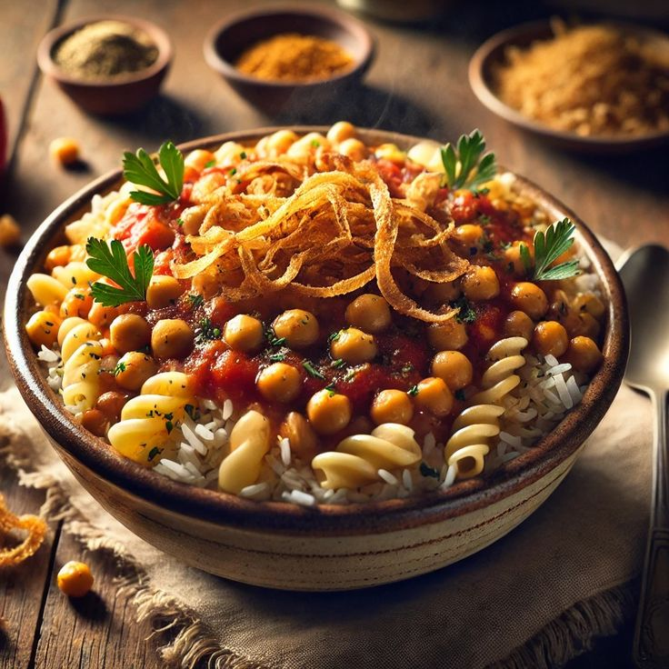

koshary
Ingredients:
- Rice
- Pasta
- Tomato
- Homos
- Hot Sauce
- Lentils
- Onions
Directions:
- Combine the lentils and water in a large saucepan. Bring to a boil, then simmer over medium heat for 25 minutes. Add the rice to the lentils, and continue to simmer for an additional 20 minutes, or until rice is tender.
- Fill a separate saucepan with lightly salted water and bring to a boil. Add the macaroni and cook until tender, about 8 minutes. Drain.
- Meanwhile, heat the vegetable oil in a large skillet over medium heat. Add onion and garlic; cook and stir until onion is lightly browned. Pour in the tomatoes and season with red pepper flakes, salt and pepper. Simmer over medium heat for 10 to 20 minutes.
- In a large serving dish, stir together the lentils, rice and macaroni. Mix in the tomato sauce until evenly coated.

More about koshary